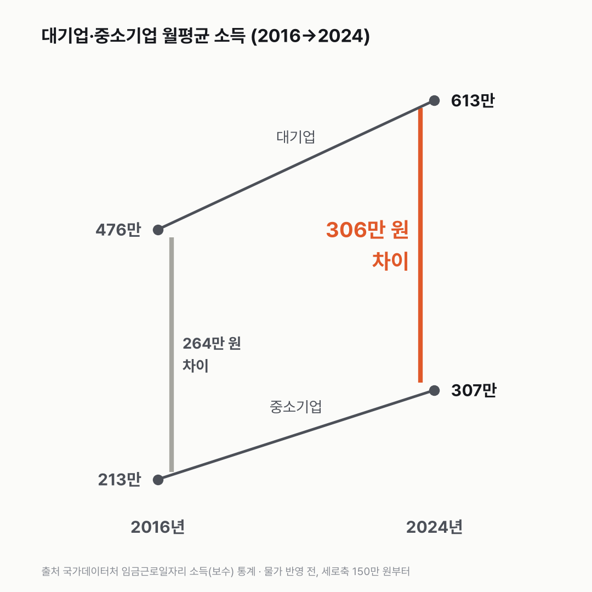
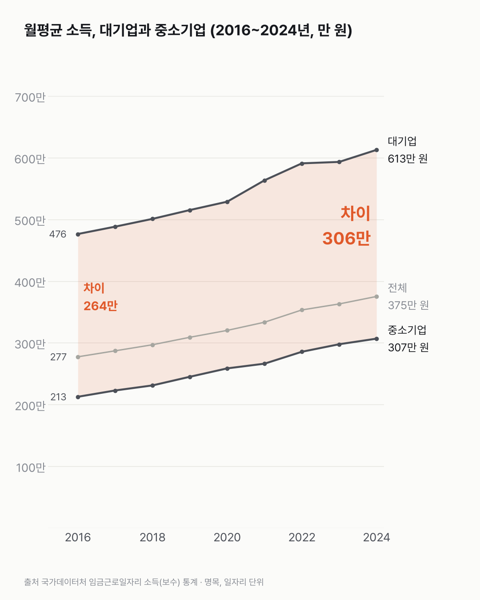
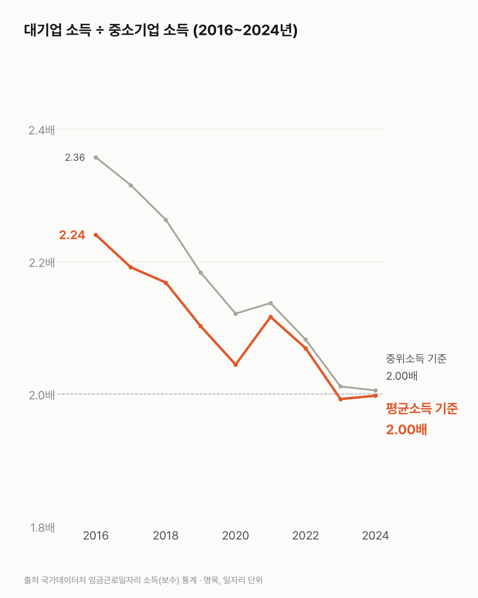

대기업과 중소기업 월급, 배수는 줄었는데 금액 차이는 커졌어요
같은 숫자로 '격차가 줄었다'와 '격차가 벌어졌다'를 둘 다 말할 수 있어요. 몇 배로 재느냐, 몇 원으로 재느냐의 차이예요.

- 2024년 일자리 하나의 월평균 소득은 대기업 613만 원, 중소기업 307만 원이에요.
- 몇 배인지로 재면 2016년 2.24배에서 2024년 2.00배로 좁혀졌어요.
- 금액 차이는 같은 기간 264만 원에서 306만 원으로 42만 원 커졌어요.
이 통계가 세는 건 일자리예요. 한 사람이 일자리 두 개를 가지면 두 번 세고, 금액은 행정자료에 잡힌 일자리 하나의 월평균 소득이에요. 그렇게 세면 2024년 전체 일자리 평균은 375만 원이었어요. 대기업 일자리는 613만 원, 중소기업은 307만 원이에요.
몇 배인지로 재면 8년 새 좁혀졌어요. 2016년엔 대기업이 중소기업의 2.24배였는데 2024년엔 2.00배예요. 같은 기간 중소기업은 44%, 대기업은 29% 올랐거든요. 출발점이 낮은 쪽이 더 빨리 올랐어요.
금액으로 재면 방향이 반대예요. 중소기업은 213만 원에서 94만 원 올랐고, 대기업은 476만 원에서 136만 원 올랐어요. 44%와 94만 원, 29%와 136만 원. 숫자를 나란히 놓으니 보이더라고요. 비율로 앞선 쪽과 금액으로 앞선 쪽이 달랐어요. 그래서 차이는 264만 원에서 306만 원이 됐어요.

평균은 아주 높은 소득에 끌려 올라가기 쉬워서 중위소득(줄 세웠을 때 가운데 값)도 봤어요. 모양이 같았어요. 비율은 2.36배에서 2.0배로 좁혀졌고, 금액 차이는 234만 원에서 256만 원으로 커졌어요.
비율이 꾸준히 줄기만 한 것도 아니었어요. 2020년 2.04배에서 2021년 2.12배로 한 번 벌어졌고, 2023년 1.99배에서 2024년 2.00배로는 거의 움직이지 않았어요.

비율이 그대로인 채 두 쪽이 함께 오르면 금액 차이는 커지게 돼요. 산수로는 그런데, 사람들이 느끼는 격차는 둘 중 어느 숫자를 따라갈까요?
이 숫자는 어디서 왔나요
출처
| 데이터 | 출처 | 쓰임 |
|---|---|---|
| 기업규모별 소득 (KOSIS DT_1EP_2001) | 국가데이터처 「임금근로일자리 소득(보수) 통계」 | 전체·대기업·중소기업·비영리기업 일자리의 월평균 소득과 중위소득, 2016~2024년 |
- 행정자료로 만든 일자리 단위 통계다. 한 사람이 일자리 두 개를 가지면 두 번 센다.
- 금액은 월평균, 명목(만 원)이다.
- 검증: 모든 연도·기업규모에서 소득 구간별 비율의 합이 100%인지 확인했다.
- 교차 확인: 2024년 전체 375만 원, 대기업 613만 원, 중소기업 307만 원, 차이 306만 원(전년보다 11만 원 확대)은 2026년 2월 보도 수치와 같다.
- 수집일: 2026-10-29 (KOSIS 오픈API).
- 차트·본문 금액은 만 원 아래를 반올림했어요. 차이(264만·306만 원)는 반올림 전 값으로 빼서, 반올림한 두 값을 빼면 1만 원 다를 수 있어요(476 − 213 = 263). 2.00배는 1.997배를 반올림한 값이에요.
- 오른 비율: 중소기업 +44%(212.6만 → 306.8만 원), 대기업 +29%(476.4만 → 612.7만 원). 같은 표에서 계산했어요. 오른 금액은 중소기업 94만 원, 대기업 136만 원이에요.
기준일
2016~2024년 각 연도.
한계 5가지
이 데이터로 말할 수 없는 것
- 같은 일을 비교한 것이 아니다. 대기업과 중소기업은 하는 일, 나이, 근속, 근로시간 구성이 다르다. 그 차이가 모두 섞인 값이다.
- 일자리 단위다. 한 사람이 받는 총 월급과 다를 수 있다(일자리 여러 개, 연중 일부만 일한 경우 등).
- 명목 금액이다. 물가를 빼면 두 쪽 모두 오른 폭이 작아진다. 비율 비교에는 영향이 없다.
- '비율이 줄었다'와 '금액 차이가 커졌다'는 둘 다 사실이다. 어느 쪽으로 읽을지는 질문에 따라 다르다. 이 글은 둘 다 적는다.
- 원인은 말하지 않는다. 이직을 권하는 글도 아니다.
전제 기록
데이터를 보기 전에 적어둔 것, 그리고 보고 나서 바꾼 것
- 전제 기록(premises)(데이터를 받기 전에 작성)를 따랐다. 전제 4(비율과 금액 둘 다)에 따라 차트를 두 장으로 나눴다.
- 받은 뒤 바뀐 점: 표 주석이 없어 단위·정의는 보도 수치와 대조해 확인했다.
질문
2.24배에서 2.00배로. 264만 원에서 306만 원으로. 둘 다 대기업과 중소기업 월급을 잰 숫자예요. 앞의 숫자로는 격차가 줄었고, 뒤의 숫자로는 벌어졌어요. 기업규모별 소득 통계를 2016년부터 2024년까지 한 해씩 열어 봤어요.
새 글 나오면 받아 보기
지금은 RSS로 받을 수 있어요. 메일은 아직 준비 중이에요.